barbac (barcode bioinformatics analysis and clustering) is an R package for end-to-end DNA barcode lineage tracking. It provides both a lightweight wrapper around the bioinformatics pipeline used to extract barcodes from FASTQ reads (FastQC → PEAR → minimap2 → samtools) and a native R clustering routine, super_cluster2(), backed by a bit-parallel 64-bit edit-distance kernel written in C++. On the Johnson et al. (2023) reference benchmark, barbac reaches statistical parity with Shepherd at ~1.7× the speed; on datasets with indel errors it substantially outperforms Shepherd on false-positive and wrong-sequence rates.
Installation
# Install development version from GitHub
if (!require("remotes")) install.packages("remotes")
remotes::install_github("loukesio/barbac")
library(barbac)barbac links to Rcpp and requires a working C++ toolchain. It also depends on the Bioconductor packages GenomicAlignments and GenomicRanges (installed automatically). The upstream CLI pipeline (FastQC, PEAR, minimap2, samtools) is optional and provisioned via configure_environment() on demand.
Prefer a container? Use the pre-built image
Every push to main builds and publishes a Docker image with R, Bioconductor, and the full FASTQ→BAM CLI stack (FastQC, PEAR, minimap2, samtools, MultiQC) already installed, alongside the latest barbac. Zero conda dance:
docker pull ghcr.io/loukesio/barbac:latest
# Start an R session with your working directory mounted at /data
docker run --rm -it -v "$(pwd)":/data ghcr.io/loukesio/barbac:latest R
# Or run a script non-interactively
docker run --rm -v "$(pwd)":/data ghcr.io/loukesio/barbac:latest \
Rscript /data/my_analysis.RTags: latest on main, <short-sha> per commit, 0.1.0 / 0.1 on version tags.
Environment setup (optional — only for the FASTQ→BAM pipeline, native install)
# One-time: create the conda environment with FastQC, PEAR, minimap2, samtools
configure_environment()
# Activate for this R session (adds the tools to PATH)
use_barbac_env()
# Sanity-check
check_barbac_tools()Quick start — clustering
result <- super_cluster2(
"path/to/reads.csv", # or a data.frame with columns `barcode`, `counts`
distance = 3, # max Levenshtein distance
merge_ratio = 20 # distance-aware count-ratio merge guard
)
result
#> # A tibble: N x 5
#> cluster_id central_barcode all_barcodes all_counts sum_counts
#> ...super_cluster2() returns one row per cluster: the abundance-ranked centroid, the list of member barcodes and their counts, and the summed abundance.
Quick start — time-series visualisation
# Long-format input: (barcode, time, counts)
barbac_ts_area(reads_long,
min_total_count = 10,
include_late = TRUE, # keep barcodes appearing at later timepoints
fill_missing = "epsilon")
# Bartender-wide format is auto-detected
barbac_ts_area("path/to/cluster_output.csv")Accepts either long-format or Bartender-wide input. If neither layout matches, barbac_ts_area() errors with the expected schema. Late-appearing lineages are carried through the full series with missing cells filled by ε (default 1e-6) or by zero.
The full FASTQ→lineage pipeline

Diagram source: man/figures/pipeline.mmd. To regenerate the SVG after editing, run npx –yes -p @mermaid-js/mermaid-cli mmdc -i man/figures/pipeline.mmd -o man/figures/pipeline.svg -b transparent.
Define your samples
Provide a samples.csv file listing one sample per row. sample and R1 are required; R2 is optional (single-end mode is used when it’s missing).
sample_table <- data.frame(
sample = c("sample1", "sample2", "sample3"),
R1 = c("data/sample1_R1.fastq.gz", "data/sample2_R1.fastq.gz", "data/sample3_R1.fastq.gz"),
R2 = c("data/sample1_R2.fastq.gz", "data/sample2_R2.fastq.gz", "data/sample3_R2.fastq.gz")
)
write.csv(sample_table, "samples.csv", row.names = FALSE)| sample | R1 | R2 |
|---|---|---|
| sample1 | data/sample1_R1.fastq.gz | data/sample1_R2.fastq.gz |
| sample2 | data/sample2_R1.fastq.gz | data/sample2_R2.fastq.gz |
| sample3 | data/sample3_R1.fastq.gz | data/sample3_R2.fastq.gz |
One-command pipeline
run_cli_pipeline(
sample_table = "samples.csv",
reference = "data/Reference_barcodes.fasta",
output_dir = "results",
log_file = "barbac.log"
)Step-by-step
Prefer to run each stage explicitly? Click to expand.
samples <- "samples.csv"
ref <- "data/Reference_barcodes.fasta"
# 1. Quality control
run_fastqc(samples) # -> results/fastQC/
# 2. Merge paired-end reads
run_pear_merge(samples) # -> results/merged/
# 3. Reference mapping
run_minimap2(merged_dir = "results/merged/", # -> results/merged/bam/
reference = ref)
# 4. Mapping statistics
summarise_bam_stats(bam_dir = "results/merged/bam/")
# 5. Extract barcodes at fixed coordinates
barbac_xtr("results/merged/bam/sample1_sorted.bam",
start_pos = 54, end_pos = 78) # -> sample1_barcodes.csv
# 6. Cluster
result <- super_cluster2("sample1_barcodes.csv", distance = 3)
# 7. Visualise (once joined across timepoints)
barbac_ts_area(result_time_series)Output structure
results/
├── fastQC/ # Quality control reports
│ ├── sample1_R1_fastqc.html
│ └── sample1_R2_fastqc.html
├── merged/ # PEAR merged reads
│ ├── sample1_ANC.assembled.fastq
│ └── bam/ # Alignment results
│ ├── *.bam
│ └── *.bam.bai
├── stats/ # Summary statistics
│ └── mapping_summary.tsv
└── pipeline.logBenchmarks
Parity with Shepherd on the Johnson et al. (2023) reference dataset
Same input (100,000 true barcodes, ~1.5M unique reads), same parameters (max distance 3), same evaluation protocol.
| Method | Pearson R | FN% | FP% | WS% | Time |
|---|---|---|---|---|---|
| barbac | 1.00 | 0.47 | 0.09 | 0.06 | 1.4 min |
| Shepherd | 1.00 | 0.47 | 0.09 | 0.06 | 2.4 min |
470 of the 471 false negatives are shared between the two methods — both fail on the same hard cases (mostly barcodes with count = 0 in the input). See benchmark/compare_with_shepherd.ipynb for the full analysis.
Robustness on Illumina-quality data
We benchmarked barbac against Shepherd, Starcode, and Bartender on 10,000-barcode / 1M-read datasets under Illumina-quality error regimes typical of experimental-evolution barcode sequencing: 0.5% per-base substitution rate, insertion+deletion rates of 0% and 0.5%. Higher indel rates typical of long-read platforms (PacBio, nanopore) are outside the scope of this comparison.
| Condition | Method | Pearson R | FN% | FP% | WS% | Wall (s) | Algo (s) |
|---|---|---|---|---|---|---|---|
| sub_only (0% ins, 0% del) | barbac | 1.0000 | 0.44 | 0.47 | 0.43 | 4.3 | 0.7 |
| Shepherd | 1.0000 | 0.44 | 0.47 | 0.43 | 2.7 | 2.7 | |
| Starcode | 1.0000 | 0.48 | 0.51 | 0.47 | 2.8 | 2.8 | |
| Bartender | 1.0000 | 0.48 | 0.52 | 0.48 | 1.0 | 1.0 | |
| low_indel (0.5% ins, 0.5% del) | barbac | 1.0000 | 1.55 | 3.36 | 1.57 | 5.7 | 2.4 |
| Shepherd | 0.9993 | 0.95 | 49.15 | 48.81 | 3.5 | 3.5 | |
| Starcode | 1.0000 | 1.58 | 3.38 | 1.59 | 17.2 | 17.2 | |
| Bartender | 0.9959 | 0.94 | 511.14 | 509.41 | 2.0 | 2.0 |
Wall = end-to-end wall time. Algo = pure clustering time, excluding R boot + package loading for barbac (Shepherd/Starcode/Bartender pay a negligible boot tax so wall ≈ algo for them).
No-indel baseline. All four methods are statistically indistinguishable (R = 1.0000, FN/FP/WS all within 5 barcodes out of 10,000). Confirms the four-way validity check.
Realistic Illumina indel regime (0.5%). Two-tier picture:
- barbac and Starcode are essentially tied for clustering accuracy — both preserve R = 1.0000 and confine WS to ~1.6%. Both use Levenshtein natively.
- Shepherd and Bartender break. Shepherd’s WS rises 113-fold to 48.81% (a 31-fold gap versus barbac); Bartender’s rises to 509.41% (a 324-fold gap). Both rely on Hamming-based indexing that fragments indel variants into spurious centroids.
Where barbac beats its Levenshtein peer (Starcode).
- ~7× faster algorithm time (2.4 s vs 17.2 s at low_indel; wall-time gap smaller because barbac pays a fixed ~3 s R-boot tax that Starcode does not).
- R-native, with an in-package Rcpp binding — no shelling out to a standalone C binary and parsing text output.
-
Integrated with the FASTQ→lineage pipeline (
run_cli_pipeline,barbac_xtr) and the time-series visualisation (barbac_ts_area) in the same package.
Full reproducibility scripts are in benchmark/indel_experiment/. The experiment runner also produces mid- and high-indel conditions; those regimes (2%+ indels) are outside the Illumina scope of the current paper and treated as future work.
Documentation
- 📖 Package website: https://loukesio.github.io/barbac/
- 📘 Getting-started vignette:
vignette("barbac", package = "barbac")orbrowseVignettes("barbac") - 💻 Function help:
?super_cluster2,?barbac_ts_area,?run_cli_pipeline,?barbac_xtr,?configure_environment
Support
| 🐛 Report issues | github.com/loukesio/barbac/issues |
| 💡 Feature requests / discussion | github.com/loukesio/barbac/discussions |
| theodosiou@evolbio.mpg.de | |
| 🦋 Bluesky | @bioinformatician.bsky.social |